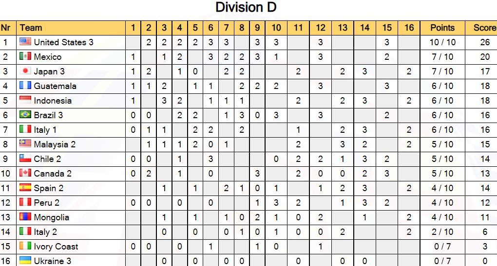

¡México sube de división por primera vez!
La WSL 2021 comenzó en febrero y durante el transcurso del año el equipo de México demostró que tiene lo necesario para el circuito internacional manteniéndose entre los primeros lugares en todo momento.
Los últimos meses fueron complicados, todos los equipos tenían jugadores de rango dan y cualquiera podría obtener el segundo y tercer lugar, siendo el primer lugar monopolizado por el equipo de EUA quien habría logrado una victoria en cada una de las rondas jugadas, permaneciendo invicto todo el torneo.
Después de las difíciles rondas finales México logro posicionarse en segundo lugar ascendiendo a la división C para el siguiente año. ¡Vamos México!
La World Shogi League (WSL), como su nombre en inglés lo indica es una Liga Mundial de Shogi, la cual se lleva a cabo de manera en-línea en la plataforma de 81Dojo.
Es un torneo anual con una duración anual. En el que se juega una ronda por mes.
La liga tiene cinco divisiones A-E.
Después de cada temporada el primero y segundo lugar de cada división ascienden, mientras que los 2 últimos lugares de la tabla descienden. (Esta regla varía dependiendo la temporada).
El principal premio son partidas de aprendizaje con análisis contra jugadores profesionales, los cuales se dan a conocer poco después de la finalización del torneo.
Otros premios: tableros, abanicos firmados por profesionales, llaveros de piezas, etc.